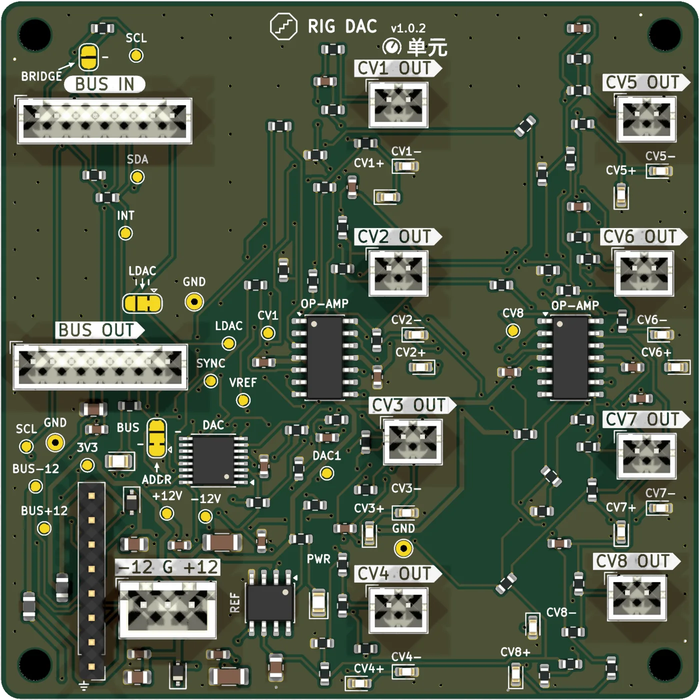
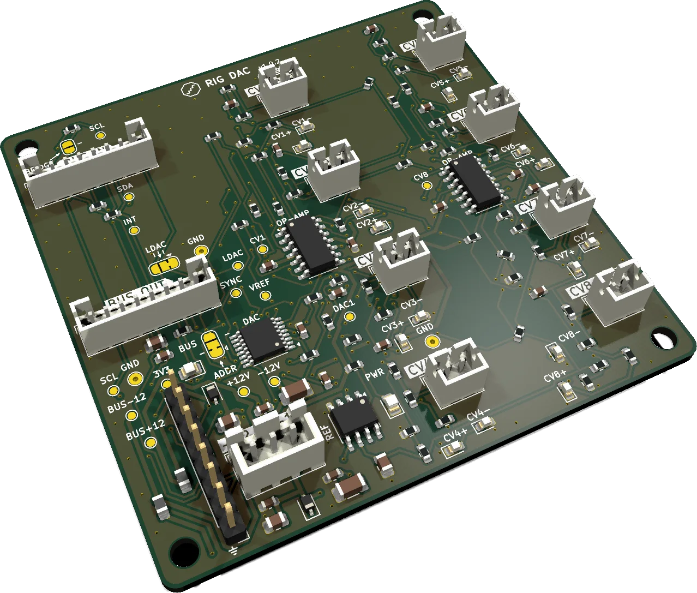
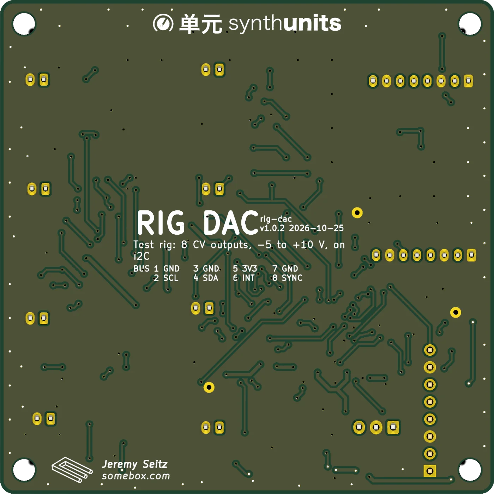
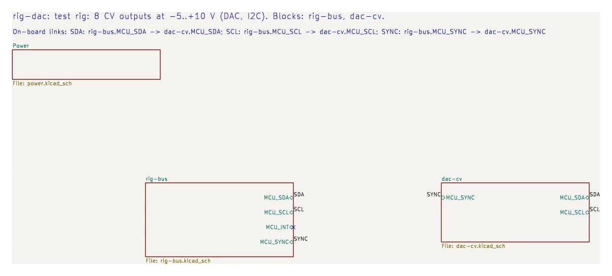
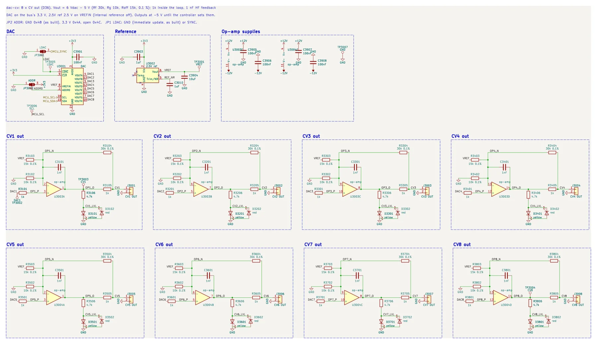
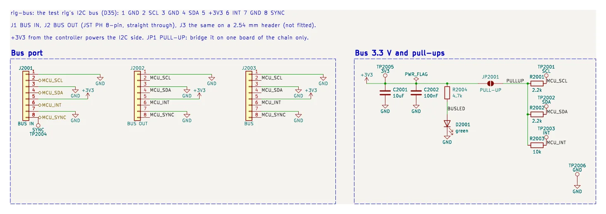

Rig: 8 CV outputs
Eight calibrated, settled CV outputs from −5 to +10 V for the test rig, set over I2C from a Pico 2.
Part of a test rig I designed so that every minimodule that arrives gets the same tests in the same way. A Python program on a computer sets CVs and gates on the module under test, records what comes out, and checks each recording against the numbers in the module's notes: frequencies, levels, times. Then the same tools help calibrate it.
An Expert Sleepers ES-8 does the recording, and plays anything that has to be timed: gates, clocks, tones, sweeps and noise, all on one sample clock. Three small I2C boards do what the ES-8 can't do precisely, chained on one bus from a Raspberry Pi Pico 2. This one gives eight static CVs. Each channel is a 12-bit DAC output scaled by an op-amp stage to −5 to +10 V, so one range covers ±5 V, 0 to 5 V and 0 to 10 V without jumpers. One 2.5 V precision reference sets both gain and offset, so they drift together and calibrate together.
The 1 kΩ output resistor sits inside the op-amp's feedback loop, so a module's input sees almost 0 Ω at DC, while a short still sees 1 kΩ. A CV can drive a module's input, or stand in for a pot: the pot is left off and the CV goes into the wiper pin of its connector. For pitch, the rig doesn't trust the DAC alone: every pitch CV is read back by the rig's 24-bit input board.
I deferred the rig boards until the first modules are proven; the ES-8 and a meter test those. Not built.
- Status
- Drawn and checked; held back from the first order
- Version
- v1.0.2 (2026-10-25)
- Board
- 72.5 × 72.5 mm, 2 layers



Block diagram
Drawn by the site's generator from the board's own data: its blocks, its connectors and the links between them. The pots and switches are listed in the block they set.
What it does
- Eight CV outputs, each −5 to +10 V (the DAC's 0 to 2.5 V, times six, less 5 V).
- 12-bit: 3.66 mV a step, about 4.4 cents of pitch.
- Gain and offset from one 2.5 V precision reference, with 0.1 % resistors in each stage.
- Rail-to-rail output op-amps, which reach +10 V on the modules' rails.
- A 1 kΩ output resistor inside the loop: near 0 Ω at DC, 1 kΩ into a short.
- Designed to settle to 0.5 mV within 0.25 ms of a 2.5 V step, with no overshoot into up to 10 nF of cable (simulated).
- A yellow and a red LED on each output, one for each polarity.
- Power: ±12 V on a 3-pin JST XH. The I2C side runs from the bus's 3.3 V.
- Addresses 0x48, 0x4A or 0x4C: up to three boards and 24 outputs on one bus.
- 72.5 × 72.5 mm, two layers.
Connections
| Connector | Wire to | Housing | Pins |
|---|---|---|---|
| POWER (1 -12V, 2 GND, 3 +12V) | a the power board output (straight-through JST XH lead) | JST XH, 3 pins, top entry | 1 −12 V, 2 GND, 3 +12 V |
| BUS IN | the controller, or the next rig board (a straight 8-pin PH lead) | JST PH, 8 pins, top entry | 1 GND, 2 SCL, 3 GND, 4 SDA, 5 +3V3, 6 INT, 7 GND, 8 SYNC |
| BUS OUT | the controller, or the next rig board (a straight 8-pin PH lead) | JST PH, 8 pins, top entry | 1 GND, 2 SCL, 3 GND, 4 SDA, 5 +3V3, 6 INT, 7 GND, 8 SYNC |
| CV1 OUT | a module's input, or a pot connector's pin 2 (a wiper lead, D34) | JST PH, 2 pins, top entry | 1 CV, 2 GND |
| CV2 OUT | a module's input, or a pot connector's pin 2 (a wiper lead, D34) | JST PH, 2 pins, top entry | 1 CV, 2 GND |
| CV3 OUT | a module's input, or a pot connector's pin 2 (a wiper lead, D34) | JST PH, 2 pins, top entry | 1 CV, 2 GND |
| CV4 OUT | a module's input, or a pot connector's pin 2 (a wiper lead, D34) | JST PH, 2 pins, top entry | 1 CV, 2 GND |
| CV5 OUT | a module's input, or a pot connector's pin 2 (a wiper lead, D34) | JST PH, 2 pins, top entry | 1 CV, 2 GND |
| CV6 OUT | a module's input, or a pot connector's pin 2 (a wiper lead, D34) | JST PH, 2 pins, top entry | 1 CV, 2 GND |
| CV7 OUT | a module's input, or a pot connector's pin 2 (a wiper lead, D34) | JST PH, 2 pins, top entry | 1 CV, 2 GND |
| CV8 OUT | a module's input, or a pot connector's pin 2 (a wiper lead, D34) | JST PH, 2 pins, top entry | 1 CV, 2 GND |
Every panel control has its own connector with a fixed pinout, so any lead of the right size fits any module. Pin 1 is the square pad.
LEDs
On the board: PWR (green), BUS (green), CV1+ (yellow), CV1- (red), CV2+ (yellow), CV2- (red), CV3+ (yellow), CV3- (red), CV4- (red), CV5+ (yellow), CV5- (red), CV6+ (yellow), CV7+ (yellow), CV7- (red), CV8+ (yellow), CV8- (red).
Wiring and setup
- Power from one of the power hub's outputs on a 3-pin JST XH lead. Plug every lead in before the supply is switched on.
- The rig bus: BUS IN and BUS OUT, 8-pin JST PH, wired straight through. A straight lead comes from the Pico 2 or the previous board, another goes on to the next.
- Bus pinout: 1 GND, 2 SCL, 3 GND, 4 SDA, 5 3.3 V, 6 INT, 7 GND, 8 SYNC. No other connector in the series has 8 pins, so a bus lead can't go anywhere else.
- Each output is a 2-pin JST PH (1 CV, 2 GND): a straight lead to a module's input.
- To stand in for a pot, a wiper lead puts the CV on pin 2 of the module's pot connector, with the pot left off.
- ADDR jumper: GND 0x48 (as built), 3.3 V 0x4A, open 0x4C.
- LDAC jumper: GND, so each write updates its channel at once (as built), or the bus's SYNC line, so outputs change together.
- Bridge the PULL-UP jumper on one board of the chain only.
- The bus is also on a 2.54 mm header, not fitted, for an adapter board or a breadboard.
Limits and open questions
- Not built or measured; deferred until the first modules are proven.
- Every output sits at −5 V from power-up until the controller sets it.
- The DAC's own internal reference must never be switched on: it would fight the external one.
- A shorted output overloads its 1 kΩ resistor, and a lead onto ±12 V can burn it. Don't leave outputs shorted or patch them onto a rail.
- The DAC's linearity is only specified away from the very ends of its range.
- Plugging a board onto a live bus dips the shared 3.3 V and can reset a running DAC to −5 V: change bus leads with the Pico unpowered.
- Some tracks run under an M3 screw head: use nylon screws or washers.
Development notes
- The controller is a Pico 2 in MicroPython. The host, a Python package with pytest, sends it one text command a line over USB and gets OK or ERR back: CV sets a channel in volts through its calibration, CODE writes a raw code for calibrating, SCAN lists the boards on the bus.
- To the Pico this board is an I2C peripheral at 0x48 (or 0x4A, 0x4C), at 3.3 V and 100 kHz. A broadcast address updates every DAC board at once.
- The firmware's first job after power-up is to set every channel. It never sends the command that turns on the DAC's internal reference, not even as a broadcast.
- Calibration: the rig's input board, itself calibrated against its 5.000 V reference, measures each channel, and the host keeps the coefficients in a file per board, keyed by its serial.
- The controller's commands borrow the shape of monome's ii protocol (a command, a port, a value), but the bus doesn't speak ii: only a microcontroller can answer ii messages, and the rig chips' addresses collide with ii devices.
- The firmware isn't written yet. These boards are also the first build of the DAC-to-CV and gate blocks planned for a digital bridge (MIDI in, CV out).
Schematic
The schematic as drawn, with each chip named by its function rather than its part number. The design isn't open source yet, so there are no files to download.







Would you use a RIG DAC? A thumbs-up on its tracking issue is how I count interest, and you can subscribe there to follow its bring-up. Questions and ideas go to the discussions.